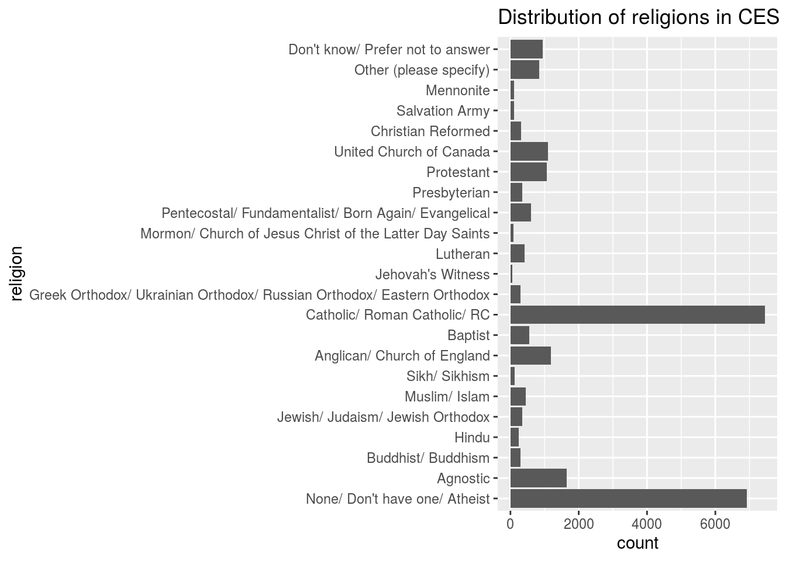
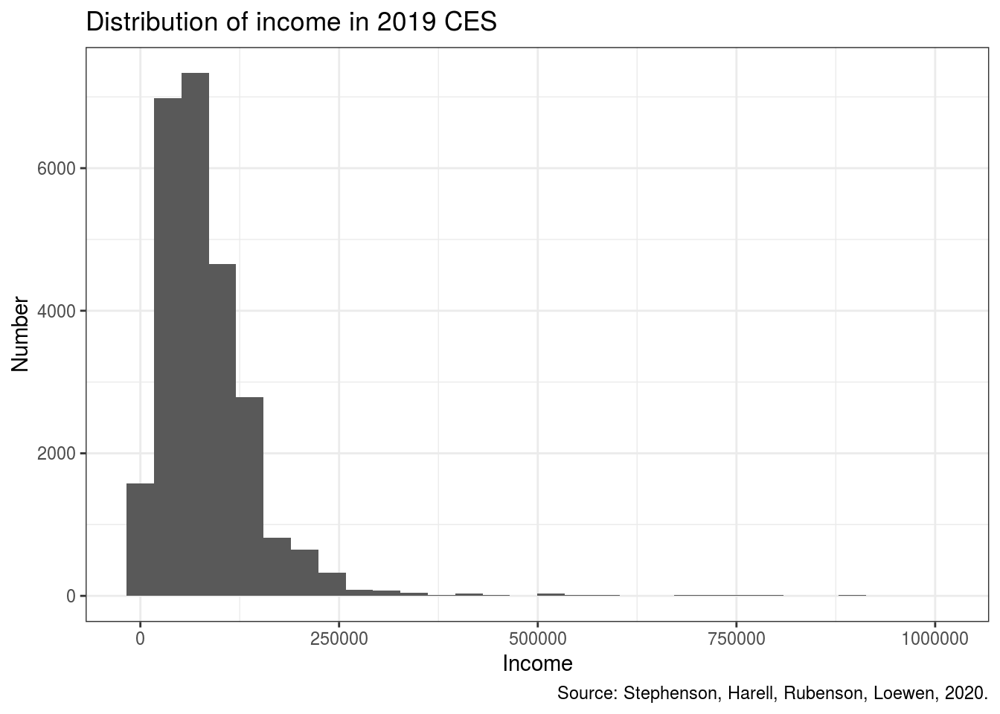

Abstract
We invested the data of 2019 CES. We summarized the data, and we performed graphs of income and religion. The result showed that most people had lower income, and most people believed in Catholic or none.
Introduction
The Canadian Election Study data is very important for our society. We can explore a lot of interesting things from the data set. This time, our main purpose is to investigate the income and religion of Canadian citizens.
First, we summarized the CES2019 data to get some important numbers (mean,median,standard deviation, minimum, maximum) of it. We found that most people had lower income. Then, we created a bar plot to study the religion of Canadian Citizen. We could see the diversity of religions in Canada through the graph. Lastly, we created a histogram to see the distribution of income. We found that it was heavily right skewed, which means a few Canadians had extremely higher income than others.
However, there are still some weaknesses of our research. For example, we should not consider 0 income observations when we summarize the data. At the same time, the sample size was too small (only 37822 citizens cannot represent the whole country). Next time, we want to have larger sample size and cleaner data.
#install.packages("devtools")
#devtools::install_github("hodgettsp/cesR")
cesR::get_decon()
## TO CITE THIS SURVEY FILE: Stephenson, Laura B; Harell, Allison; Rubenson, Daniel; Loewen, Peter John, 2020, '2019 Canadian Election Study - Online Survey',
## https://doi.org/10.7910/DVN/DUS88V, Harvard Dataverse, V1
## LINK: https://dataverse.harvard.edu/dataset.xhtml?persistentId=doi:10.7910/DVN/DUS88VData
The CES data is based on the Canadian Election Study of 2019. In our data, we have 37822 observations (one observation refers to one person), and 22 variables. Variables include citizenship, year of birth, gender, territory, education, income, religion, employment, etc.
head(decon)
## # A tibble: 6 x 22
## ces_code citizenship yob gender province_territ… education lr lr_bef
## <chr> <fct> <fct> <fct> <fct> <fct> <chr> <chr>
## 1 ces2019… Canadian c… 1989 A wom… Quebec Master's… 2 <NA>
## 2 ces2019… Canadian c… 1998 A wom… Quebec Master's… 2 <NA>
## 3 ces2019… Canadian c… 2000 A wom… Ontario Some uni… 4 4
## 4 ces2019… Canadian c… 1998 A man Ontario Some uni… 7 7
## 5 ces2019… Canadian c… 2000 A wom… Ontario Complete… 4 4
## 6 ces2019… Canadian c… 1999 A wom… Ontario Some uni… 4 4
## # … with 14 more variables: lr_aft <chr>, religion <fct>,
## # sexuality_selected <fct>, sexuality_text <chr>, language_eng <fct>,
## # language_fr <fct>, language_abgl <fct>, employment <fct>, income <dbl>,
## # income_cat <fct>, marital <fct>, econ_retro <fct>, econ_fed <fct>,
## # econ_self <fct>Now we want to sort the CES data to help us investigate the variables we are focusing.
decon <-
decon %>%
filter(income < 1000000)
decon_rein= decon %>%
select(religion, income)
decon %>% summarise(mean_income = mean(income), sd_income = sd(income), median_income = median(income), max_income = max(income), min_income = min(income))
## # A tibble: 1 x 5
## mean_income sd_income median_income max_income min_income
## <dbl> <dbl> <dbl> <dbl> <dbl>
## 1 84318. 68724. 72000 999000 0Data Discussion
The variables we focus on are income and religion. We want to discuss the data of the income first because religion is categorical variable.
The mean income in 2019 CES is 84319.88, the standard deviation is 68723.6, the median income is 72000, the max is 999000 and the minimum income is 0.
The mean income might not be representative, as many observations has no income. The standard deviation of the data is really large, which indicates that the data points are spread out over a large range of values, which we can also see from the minimum and the maximum income. The median income is lower than the mean, which represent that most people have lower income.
Now, we want to see the graph of religions of people in 2019 CES. So we create a barplot.
decon_rein %>%
ggplot(aes(x = religion))+
geom_bar()+coord_flip()+labs( title = "Distribution of religions in CES") 
Now, we want to see the distribution of income in 2019 CES.
decon %>%
ggplot(aes(x = income)) +
geom_histogram() +
labs(x = "Income",
y = "Number",
title = "Distribution of income in 2019 CES",
caption = "Source: Stephenson, Harell, Rubenson, Loewen, 2020.") +
theme_bw()
## `stat_bin()` using `bins = 30`. Pick better value with `binwidth`.
Graph Disscusion
In the graph of religion, we find that most observations are Catholic or Atheist. The amount of Catholic and Atheist are extremely larger than the other religions. Beside, we find that 5 categories have the least amount of observations, which are Mennonite, Salvation Army, Mormon, Jehovah’s Witness and Sikh.
In the distribution of income, we can see that the graph is heavily right skewed. As we discussed in the data discussion, most people has lower income; which is 0 to 250,000. We can also find some outliers, which represent the high-income observations.
Discussion
From the first graph, we find that Canada is a comprehensive countries with 23 different religions. Most of the people believe in Catholic, and a large amount of citizens have none religions. However, there are more people who have their religion.
From the graph and data of income, we can see most people have income between 0 and 250,000. We notice that many people have 0 income, because most of these observations are students. Beside, people who have 500,000-1,000,000 income are rare, but their income is extremely higher than the others.
In the survey of religion, there is a choice “Prefer not to answer”, and this might make the count of each religion less accurate. Also it is inappropriate to count people with 0 income when calculating the mean income because it makes the mean income lower than it suppose to be.
Weaknesses and next steps
Weaknesses 1. We should not consider income=0 when we summary the data of income. 2. The survey should consider not to have a “Prefer not to answer” option in the answer, which may influence the result. 3. The sample size is too small to estimate the result of all Canada Citizen.
Next steps: 1. Filter out the 0 income observations if we want to explore on income data. 2. Try to avoid confusing options in our survey. 3. Increase sample size to better estimate the result we want.
References
Wickham et al. (2019)
Tierney (2017)
Hodgetts and Alexander (2020)
Waring et al. (2020)
JJ Allaire and Yihui Xie and Jonathan McPherson and Javier Luraschi and Kevin Ushey and Aron Atkins and Hadley Wickham and Joe Cheng and Winston Chang and Richard Iannone (2020). rmarkdown: Dynamic Documents for R. R package version 2.3. URL https://rmarkdown.rstudio.com.
Yihui Xie and J.J. Allaire and Garrett Grolemund (2018). R Markdown: The Definitive Guide. Chapman and Hall/CRC. ISBN 9781138359338. URL https://bookdown.org/yihui/rmarkdown.
Hodgetts, Paul A., and Rohan Alexander. 2020. CesR: Access the Ces Datasets a Little Easier.
Tierney, Nicholas. 2017. “Visdat: Visualising Whole Data Frames.” JOSS 2 (16): 355. https://doi.org/10.21105/joss.00355.
Waring, Elin, Michael Quinn, Amelia McNamara, Eduardo Arino de la Rubia, Hao Zhu, and Shannon Ellis. 2020. Skimr: Compact and Flexible Summaries of Data.
Wickham, Hadley, Mara Averick, Jennifer Bryan, Winston Chang, Lucy D’Agostino McGowan, Romain François, Garrett Grolemund, et al. 2019. “Welcome to the tidyverse.” Journal of Open Source Software 4 (43): 1686. https://doi.org/10.21105/joss.01686.